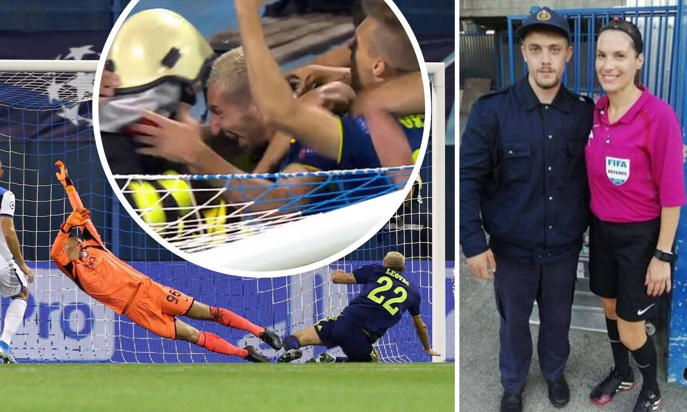
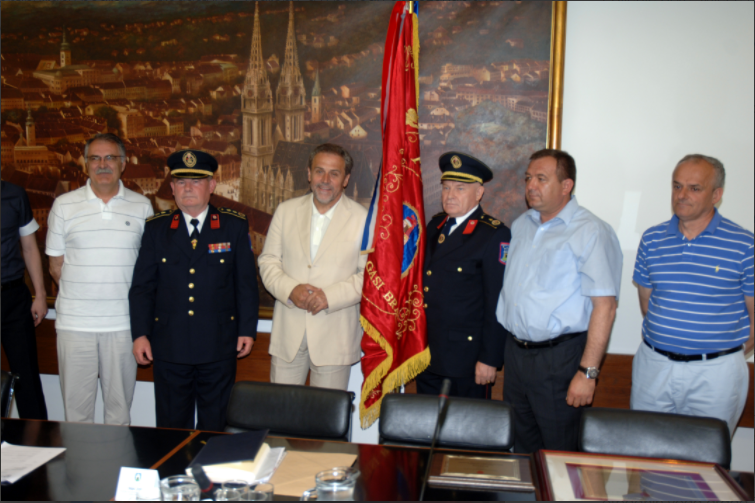

Novosti
Pripremni sastanak za izradu Programa aktivnosti 2021.
Danas je putem video veze održan sastanak na temu priprema Programa aktivnosti u provedbi posebnih mjera zaštite od požara od interesa za Republiku Hrvatsku u 2021. godini.Sastanak je u ime Hrvatske vatrogasne zajednica vodio Siniša Petkoviček. Sudionici Programa aktivnosti su dostavili svoje prijedloge izmjena prema kojima će biti izrađen novi Program aktivnosti. Više...

Vatrogasac koji je slavio s Modrima opisao trenutak koji je postao hit: "Bio sam tako sretan..."
Prva eurupcija tribina dogodila se već u 10. minuti; Petar Stojanović je ubacio, a njegov kolega s lijeve strane Marin Leovac zabio za vodstvo. Uslijedilo je ludo slavlje Modrih, u čijem zagrljaju se našao i – vatrogasac s atletske staze. Scena je postala hit, a dan nakon utakmice pronašli smo vatrogasca koji je slavio s igračima. Njegovo je ime Mateo Pinter, a svoje dojmove opisao je Više...

Predstavnici DVD-a Maksimir kod gradonačelnika
Predstavnici Dobrovoljnog vatrogasnog društva Maksimir uručili su, jutros, gradonačelniku Milanu Bandiću plakete u znak zahvale za kontinuiranu podršku vatrogastvu u Zagrebu, a u povodu obilježavanja 80-te obljetnice Društva. Kratka svečanost počela je stavljanjem lente s imenom gradonačelnika na zastavu DVD-a, a završila dodjelom plaketa. Više...